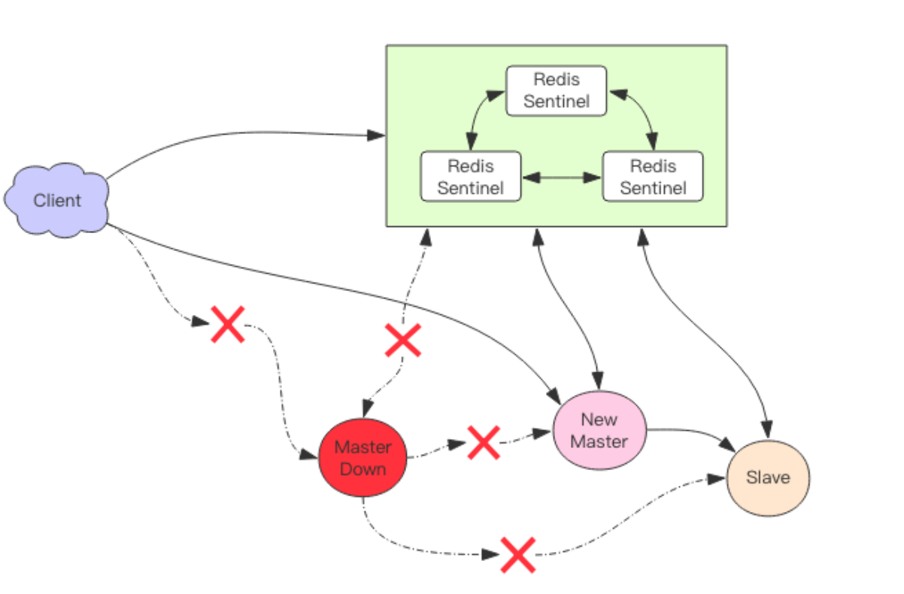
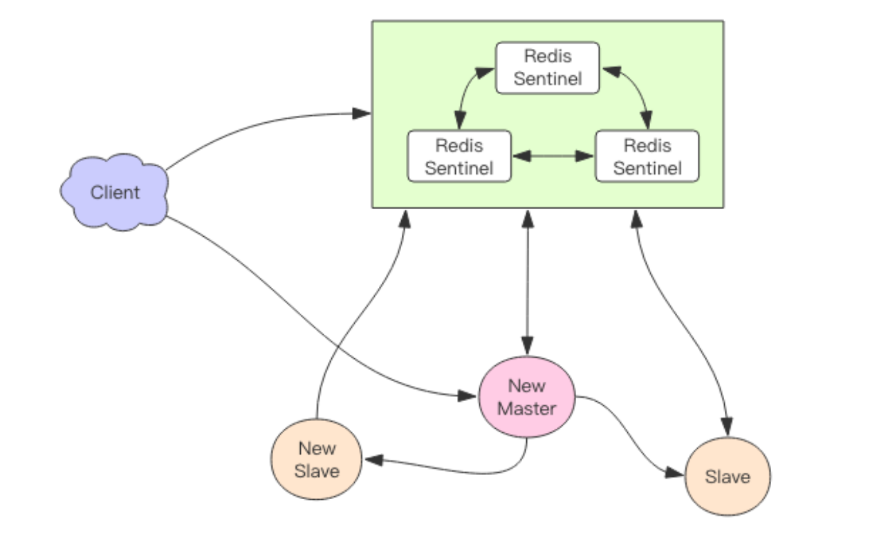

集群1—— Sentinel
目前我们讲的 Redis 还只是主从方案，最终一致性。读者们可思考过，如果主节点凌晨3 点突发宕机怎么办？就坐等运维从床上爬起来，然后手工进行从主切换，再通知所有的程序把地址统统改一遍重新上线么？毫无疑问，这样的人工运维效率太低，事故发生时估计得至少 1 个小时才能缓过来。如果是一个大型公司，这样的事故足以上新闻了。
所以我们必须有一个高可用方案来抵抗节点故障，当故障发生时可以自动进行从主切换，程序可以不用重启，运维可以继续睡大觉，仿佛什么事也没发生一样。Redis 官方提供了这样一种方案 —— Redis Sentinel(哨兵)。

我们可以将 Redis Sentinel 集群看成是一个 ZooKeeper 集群，它是集群高可用的心脏，它一般是由 3～5 个节点组成，这样挂了个别节点集群还可以正常运转。它负责持续监控主从节点的健康，当主节点挂掉时，自动选择一个最优的从节点切换为主节点。客户端来连接集群时，会首先连接 sentinel，通过 sentinel 来查询主节点的地址，然后再去连接主节点进行数据交互。当主节点发生故障时，客户端会重新向 sentinel 要地址，sentinel 会将最新的主节点地址告诉客户端。如此应用程序将无需重启即可自动完成节点切换。比如上图的主节点挂掉后，集群将可能自动调整为下图所示结构。
从这张图中我们能看到主节点挂掉了，原先的主从复制也断开了，客户端和损坏的主节点也断开了。从节点被提升为新的主节点，其它从节点开始和新的主节点建立复制关系。客户端通过新的主节点继续进行交互。Sentinel 会持续监控已经挂掉了主节点，待它恢复后，集群会调整为下面这张图。
此时原先挂掉的主节点现在变成了从节点，从新的主节点那里建立复制关系。
1.消息丢失
Redis 主从采用异步复制，意味着当主节点挂掉时，从节点可能没有收到全部的同步消息，这部分未同步的消息就丢失了。如果主从延迟特别大，那么丢失的数据就可能会特别多。Sentinel 无法保证消息完全不丢失，但是也尽可能保证消息少丢失。它有两个选项可以限制主从延迟过大。
min-slaves-to-write 1
min-slaves-max-lag 10
第一个参数表示主节点必须至少有一个从节点在进行正常复制，否则就停止对外写服务，丧失可用性。何为正常复制，何为异常复制？这个就是由第二个参数控制的，它的单位是秒，表示如果 10s 没有收到从节点的反馈，就意味着从节点同步不正常，要么网络断开了，要么一直没有给反馈。
2.Sentinel基本使用
接下来我们看看客户端如何使用 sentinel，标准的流程应该是客户端可以通过 sentinel发现主从节点的地址，然后在通过这些地址建立相应的连接来进行数据存取操作。我们来看看 Python 客户端是如何做的。
1 | from redis.sentinel import Sentinel |
sentinel 的默认端口是 26379，不同于 Redis 的默认端口 6379，通过 sentinel 对象的
discover_master discover_slaves 方法可以发现主从地址，主地址只有一个，从地址可以有多个。
1 | master = sentinel.master_for('mymaster', socket_timeout=0.1) |
通过 xxx_for 方法可以从连接池中拿出一个连接来使用，因为从地址有多个，redis 客户端对从地址采用轮询方案，也就是 RoundRobin 轮着来。
有个问题是，但 sentinel 进行主从切换时，客户端如何知道地址变更了 ? 通过分析源码，我发现 redis-py 在建立连接的时候进行了主库地址变更判断。连接池建立新连接时，会去查询主库地址，然后跟内存中的主库地址进行比对，如果变更了，就断开所有连接，重新使用新地址建立新连接。如果是旧的主库挂掉了，那么所有正在使用的连接都会被关闭，然后在重连时就会用上新地址。
但是这样还不够，如果是 sentinel 主动进行主从切换，主库并没有挂掉，而之前的主库连接已经建立了在使用了，没有新连接需要建立，那这个连接是不是一致切换不了？继续深入研究源码，我发现 redis-py 在另外一个点也做了控制。那就是在处理命令的时候捕获了一个特殊的异常 ReadOnlyError，在这个异常里将所有的旧连接全部关闭了，后续指令就会进行重连。主从切换后，之前的主库被降级到从库，所有的修改性的指令都会抛出 ReadonlyError。
如果没有修改性指令，虽然连接不会得到切换，但是数据不会被破坏，所以即使不切换也没关系。
作业
1、尝试自己搭建一套 redis-sentinel 集群；
2、使用 Python 或者 Java 的客户端对集群进行一些常规操作；
3、试试主从切换，主动切换和被动切换都试一试，看看客户端能否正常切换连接；